3.4. Adivinar número
Vamos a hacer un programa sencillo pero eficiente. Él pensará un número y nosotros tenemos que adivinarlo.
Tenemos que crear un interfaz para para que la aplicación se relacione con el usuario, es decir, le pregunte un número, y le vaya dando pistas, diciendo si es demasiado alto, demasiado bajo, o si finalmente ha acertado el número secreto.
1. Creamos en el Diseñador una Etiqueta, y cambiamos el texto para que aparezca en ella la palabra “Número”. Llamaré a la etiqueta E_número .
2. Añadiremos en nuestra ventana del visor un CampoDeTexto. Servirá para que el jugador indique qué número cree que ha pensado el programa, le llamaremos T_número.
3. Finalmente tendremos que añadir un Botón con el texto “Adivina” para que el dispositivo sepa cuál hemos elegido. A este botón lo llamaremos B _adivinar.
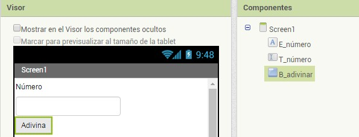
Generamos un número aleatorio
Lo primero que el programa tiene que hacer es pensar en un número. En este caso le vamos a indicar cómo debe pensar en un número entre 1 y 10. Al ser una instrucción matemática, abriremos el cajón Matemáticas , y usaremos el bloque entero aleatorio entre . Tendremos que especificarle entre qué dos números debe pensar su número.
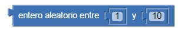
Guardamos el número en una variable
A continuación vamos a hacer que el programa guarde este número en su memoria, porque si no lo olvidaría y no podríamos jugar.
Para ello abrimos el cajón Variables y elegimos el bloque inicializar global … como. Podemos darle a la variable el nombre
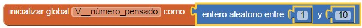
Pedimos un número al jugador.
Para comenzar a jugar deberíamos pedirle al jugador que nos diga un número. Esto lo conseguiremos por medio del campo de texto T _número que hemos creado en el Visor. El jugador irá escribiendo números en este campo y el programa le irá indicando si el número aleatorio generado secretamente es mayor o menor al que el jugador ha escrito.
Por lo tanto, cada vez que el jugador escriba su número y pulse el botón B _adivinar el programa lo comparará con el número secreto.
Hacemos comparaciones con la instrucción si-entonces
Seleccionamos el bloque si entonces del apartado Control y encajamos el bloque para hacer comparaciones del apartado Matemáticas.
En el primer hueco del bloque azul pondremos el número secreto que almacenamos antes en la variable, y en el otro lado indicaremos cuál es el número que ha escrito el jugador en el campo T _número.
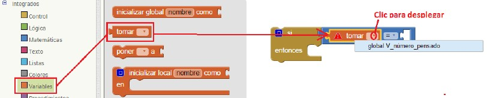
Ahora que ya sabemos cómo consultar cuál es contenido de la variable V_numero_pensado, podemos modificar la comparación haciendo clic en el centro del bloque azul. Empezaremos evaluando si el número pensado es mayor que el número del jugador.
En caso de que se cumpla la condición deberemos darle al jugador una pista, diciéndole que el número que nos ha dicho es demasiado bajo. Lo haremos creando una nueva etiqueta E_pista en el interfaz del juego.
Para guardar el valor de una variable, texto o etiqueta, necesitamos el bloque poner. Vamos a asignar el valor “Demasiado bajo” al texto de la etiqueta E _pista, para que el jugador lo vea en la pantalla del juego. Para incluir el texto “Demasiado bajo” usaremos el bloque " " que hay dentro del cajón Texto .
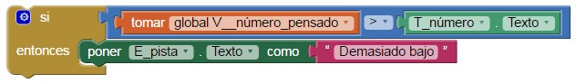
¿Cuándo debemos hacer la comparación? Cada vez que el usuario haga clic en el botón B_adivinar. Por lo tanto, incluiremos todo el bloque anterior dentro del bloque cuando.B_adivinar.Clic
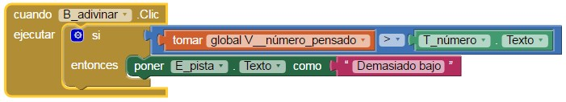
Pero esto sólo dará la pista al jugador cuando su número sea menor al pensado, así que habrá que hacer tres bloques si entonces, uno para cuando el número sea menor, otro para cuando sea mayor, y el último para cuando sea igual, en cuyo caso el jugador habrá acertado el número.
En nuestro programa, para evitar las ejecuciones de código innecesarias, vamos a utilizar sentencias si entonces anidadas, o si entonces si no. Sólo se ejecutarán los bloques del si no cuando NO se cumpla la condición del si entonces anterior. Para ello haz clic en el botón azul del bloque cuando.B_adivinar.Clic, selecciona la opción si no, si y la arrastras al bloque si de la derecha, repite la operación para colocar otro si no, si
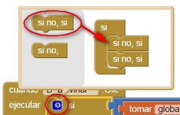
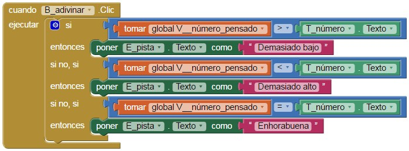
Uso de un reloj para calcular el tiempo
Un componente muy útil para controlar y gestionar la ejecución de los programas es el temporizador, o reloj. Gracias a este componente podemos definir cuándo suceden cosas, independientemente de lo que haga el usuario de la aplicación. O podemos controlar el tiempo que duran los procesos que se están ejecutando, por ejemplo.
En este caso lo utilizaremos para limitar el tiempo de que dispone el usuario para adivinar el número pensado. Cuando el tiempo se cumpla, el usuario no podrá seguir intentando adivinar el número.
Empezamos añadiendo desde la Paleta al Visor un componente del tipo Reloj, que se encuentra en el apartado Sensores. Como el reloj es un componente no visible, aparecerá fuera de la zona visible del Visor. Lo llamaremos Temporizador .
Una de las propiedades más importantes del reloj es IntervaloDelTemporizador , que controla cada cuánto tiempo se “dispara” el reloj. Se expresa en milisegundos, y su valor inicial es 1000, o lo que es lo mismo, un segundo. Esto significa que cada segundo el reloj dirá “¡Ha pasado una unidad de tiempo!”. Si cambiamos su valor por 500, por ejemplo, el reloj avisará cada medio segundo. Si ponemos 60000, entonces nos avisará cada minuto.
Par poder visualizar los segundos en la aplicación vamos a incorporar una etiqueta que llamaremos E_Tiempo. Al comenzar el juego vamos a asignar un valor de 30 a esta etiqueta, de tal forma que disponemos de 30 segundos para adivinar el número.
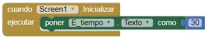
Para saber cuándo se cumplen los treinta segundos usaremos el bloque mostaza cuando Temporizador.Temporizador ejecutar, que se encuentra dentro del cajón del reloj, en el editor de bloques. Todo lo que queramos que suceda cuando se cumplan los treinta segundos habrá que ponerlo dentro de este bloque.
El temporizador comenzará a funcionar si el valor de la etiqueta E_Tiempo es distinto de 0, en cuyo caso iremos restando 1 segundo, hasta llegar a 0 que aparecerá un mensaje avisándonos que hemos acabo el juego
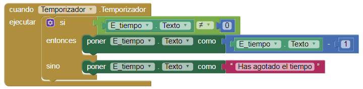
Actividad
- Mejorar la interfaz de usuario, personaliza los botones, pon una imagen de fondo.
- Poner un botón para empezar de nuevo el juego. Ten en cuenta que aquí debes poner la variable con sus valor original, la E_Tiempo con valor 30 y las etiquetas del Número y Pista deben aparecer en blanco, sin texto. 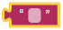
- Hacer que el jugador sólo disponga de tres intentos para adivinar el número. Para ello debes crear una variable nueva con valor de inicio 0. En el bloque cuando B_Adivinar clic comprobaremos si se cumple la condición, si se cumple podemos jugar y si no se cumple en la etiqueta Pista aparecerá el texto "Has agotado los intentos". Esto se lo indicamos con la sentencia si entonces, sino.
Obra publicada con Licencia Creative Commons Reconocimiento Compartir igual 4.0